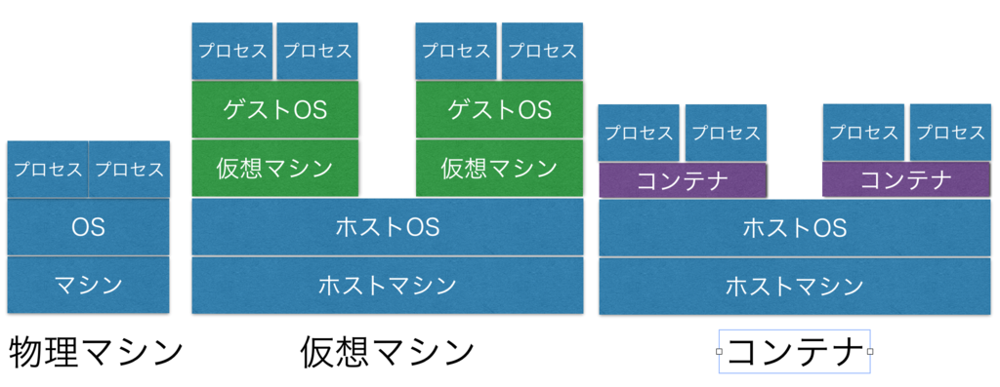

Dockerについて¶

Dockerとは¶
Linux上のシンプルで軽量な仮想環境
VagrantやVirtual Boxを用いるよりも圧倒的に動作が早く・軽い
OSレベルの仮想化なので起動は一瞬で、コンテナの起動自体ではディスクを消費しない
また、コンテナ間でイメージを共有することも可能である
設計思想は、開発者が簡単にアプリケーションを動かす環境を作ること
そのためアプリケーション実行環境のそのままをコンテナに格納して実行可能である
VagrantなどのVMとの違いは、仮想サーバではなくアプリケーションに最適化されている点である
なので原則的にひとつのコンテナにひとつのアプリケーションが実行する構成となっている
Docker用語集¶
- Dockerコンテナ
- Dockerイメージから作られ、実行される仮想環境
- ホストOSのカーネル機能を使い、複数のルート・ファイルシステムを実行
- 各ルート・ファイルシステムをコンテナと呼ぶ
- コンテナは各々にリソースを持つ ・プロセス、メモリ、デバイス、ネットワーク
- コンテナはLinuxカーネルの技術を使っている
- Dockerイメージとは
- コンテナのファイルシステム、設定をひとまとめに保存している
- Dockerコンテナ生成のベースとなるひな形
- 例としてubuntuなどのディストリビューションがイメージ化されている
- Docker Hubというリポジトリを経由すると、インターネットを介して、コンテナをポータブルにできる
- Dockerfile
- DockerにはDockerコンテナの構成情報をテキスト形式で記述できるDockerfileという仕様がある
- Dockerfileを解釈してDockerイメージを作成するdocker buildコマンドが用意されている
- Dockerfileなんて「めんどくせえ」という人は、Docker Composeを使えば、複数コンテナの構成をまとめて管理できる
Docker Compose
Dockefileだとひとつひとつのコンテナを起動させないといけないのが面倒
そうなるとシェルでまとめてコンテナ起動をさせたり、終了させたりしないといけなくてコンテナの数が増えるに連れて複雑さが増す
そこでDocker Composeを導入するとyamlファイル用いて一括管理ができる
記載する情報はDockerfileと変わらず、」docker-compose up」で一度に複数コンテナを起動できるメリットがある
Hyperledger Fabricの運用ではDocker Composeを用いている
- Data Volume
- 複数のコンテナ間で永続的なデータや共有データを扱うための特別なヴォリューム
- Data Volumeに対する変更は直接反映され、イメージの変更に含まれない
- Data Volumeは参照するコンテナがなくなっても存続する
- Data Volume Container
- コンテナ間のヴォリューム共有
- ユーザーデータなど、壊せない情報の格納場所としてData Volume Containerを利用する
まとめ¶
- Dockerとは、アプリケーションを開発・移動・実行するためのプラットフォーム
- Dockerfileという形式で、サーバーインフラをコード化できる
- 複数のコンテナ間で永続的なデータや共有データを扱うためのData Volumeも作成できる
- ネットワークポートマッピングやSwarmモード(異ホスト間のコンテナ・クラスタリング)を組み合わせると色々と柔軟なシステム構成が検討できる
- Docker Composeは複数コンテナの管理がラク